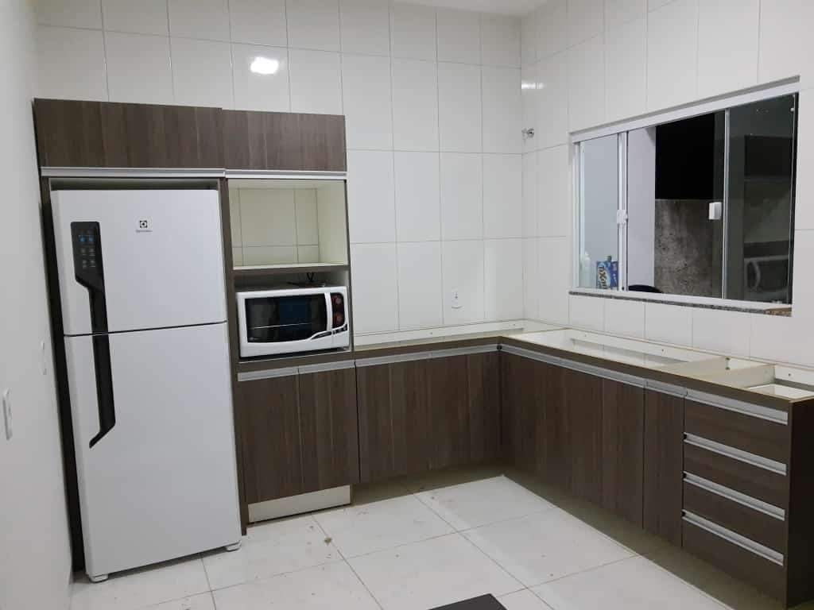
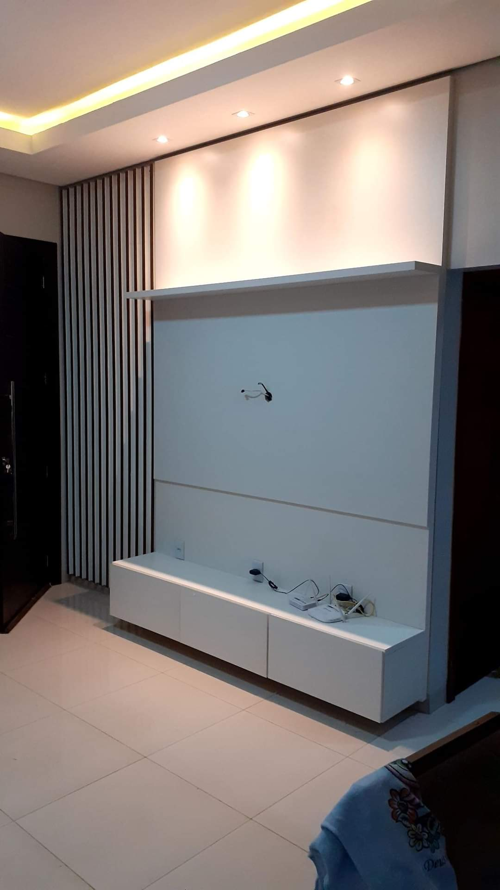
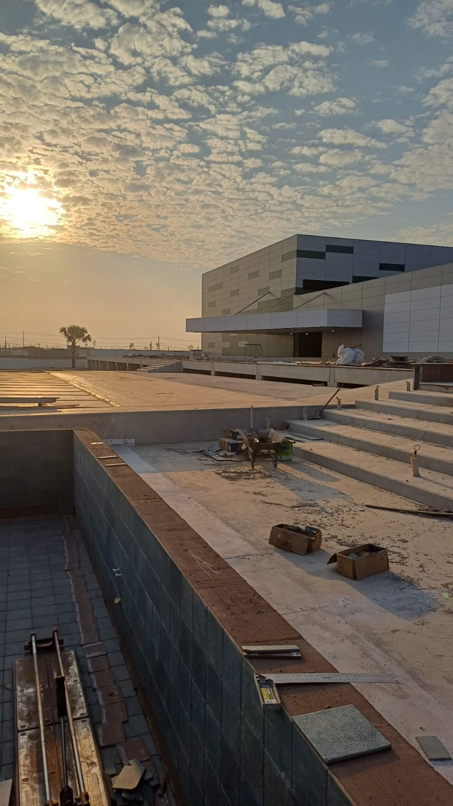

Minha História
Meu nome é Cauã Rodrigo de Almida da Silva, sou nascido e criado em Vilhena Ro, tenho 16 anos de boas histórias.
Des-de cedo trabalhei comecei ajudando meu pai com 8 anos apos alguns anos comecei a trabalhar em um açougue entrei como enpacotador mas como sempre busco aprender logo subi de cargo passei pra caixa, seçao, açougueiro e assador.
Apos essa fase iniciei minha carreira na marcenaria comecei como badeco e em quase um ano ja era marceneiro, mas por problemas familiares comecei a trabalhar em construções civis comecei como ajudante logo subi de cargo pra meia colher e me tornei pedreiro, apos um tempo decidi focar em acabamentos civis e comecei a trabalhar como azulegista que trabalho ate hoje.
Concluindo, quero dizer que, ao longo da minha vida, sempre busquei aprender. Nunca tive preguiça ou vergonha de trabalhar, pois acredito que o trabalho edifica o homem.
Habilidades
- Marcenaria: Criação de móveis sob medida, restauração e design de interiores.  
- Construção Civil: Experiência em obras de pequeno e grande porte, incluindo reformas e novas construções.
- Azulejaria: Aplicação de azulejos com precisão, criação de padrões personalizados e acabamentos de alta qualidade. 